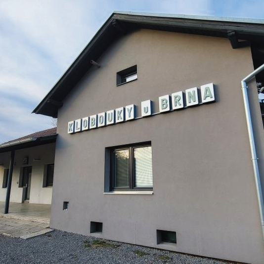
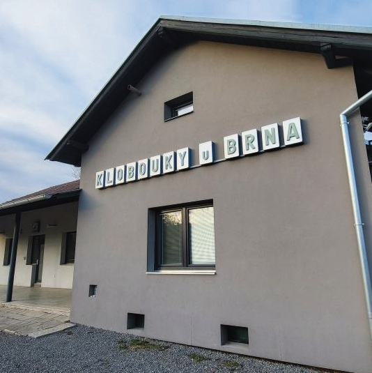
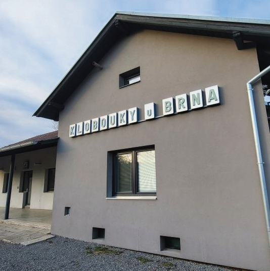

noc na kolejích prežijete
vprĚDĚLAnÉ bývalÉ stanici
noc na bývalém nádraží
v komfortně zařízených
aprtmánech
atraktivní výlety po
okolních vinných
sklepech na kolech i pjesky
This website was created with
Nicepage

 
